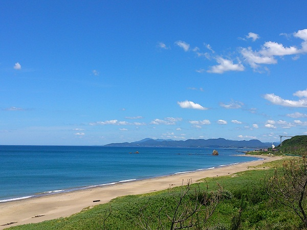

島根県芸術文化センター グラントワ
|
「美術館×劇場という芸術基地」 なるフレーズを掲げる施設です。 「美術館」の側面では、さまざまなテーマに沿った展覧会が同時に3, 4個開かれ、1つの入場券でそのすべてを見ることができます。 有名なもので、今年の1月28日まで「追悼水木しげる ゲゲゲの人生展」など、非常に幅広い作品の展示が行われています。 「劇場」の側面では、1か月に1,2回、著名なアーティストによるライブが行われます。 また、近隣の学校の文化祭や発表会の舞台としても用いられます。 公式サイト |
持石海岸
|

国道191号線沿いにある、三里ヶ浜の一部の遊泳場「持石遊泳場」。 道路を走っている時にも、思わず目を向けてしまいたくなるほどに水平線がきれいで、一直線の海岸が延々と続いています。 シャワー施設も整っているため、サーフィンやボディボードなどマリンスポーツを楽しむ人で賑わいます。 また、石のモニュメントや東屋などもあるので海を眺めるだけでも楽しめる場所です。特に夕暮れ時は、延々と続く海岸線に沈む夕日が格別の時間を味あわせてくれます。 |